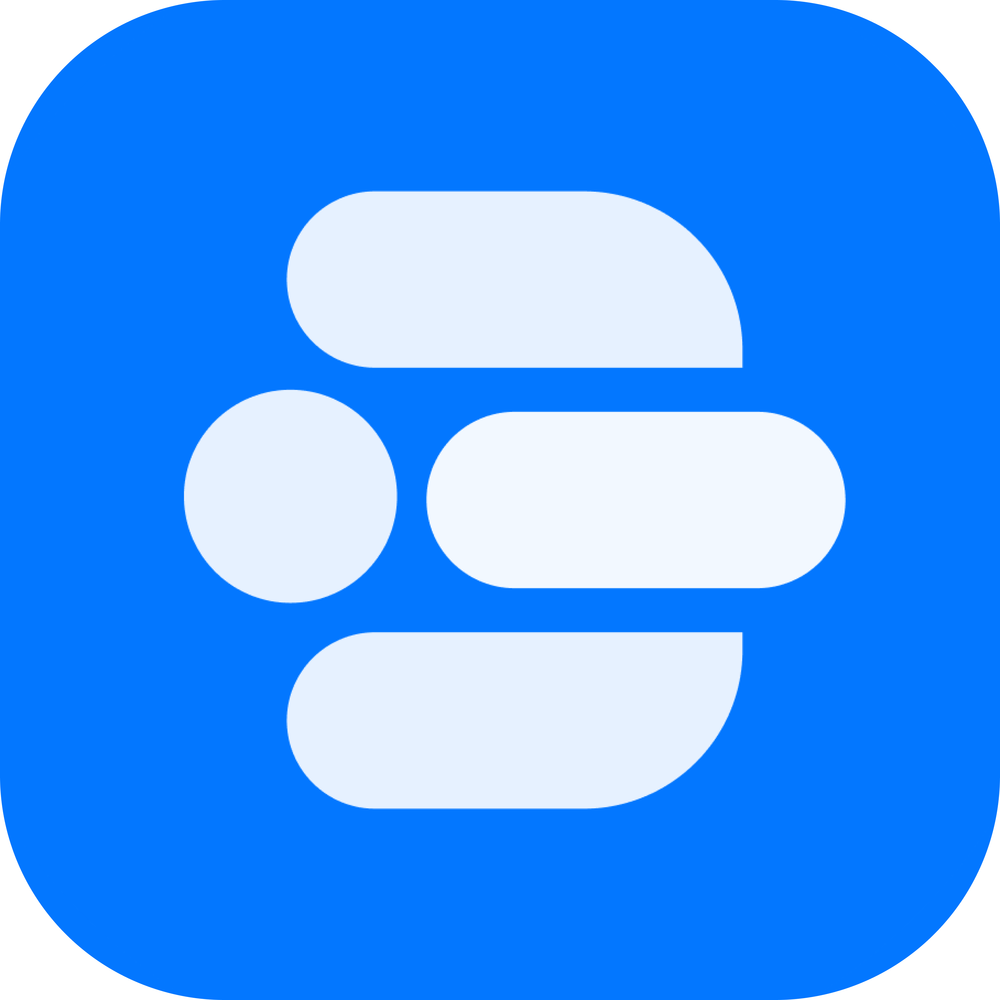
Product Designer
Docswell is a UK-based medtech company that helps medical practices completely digitise their workflow.
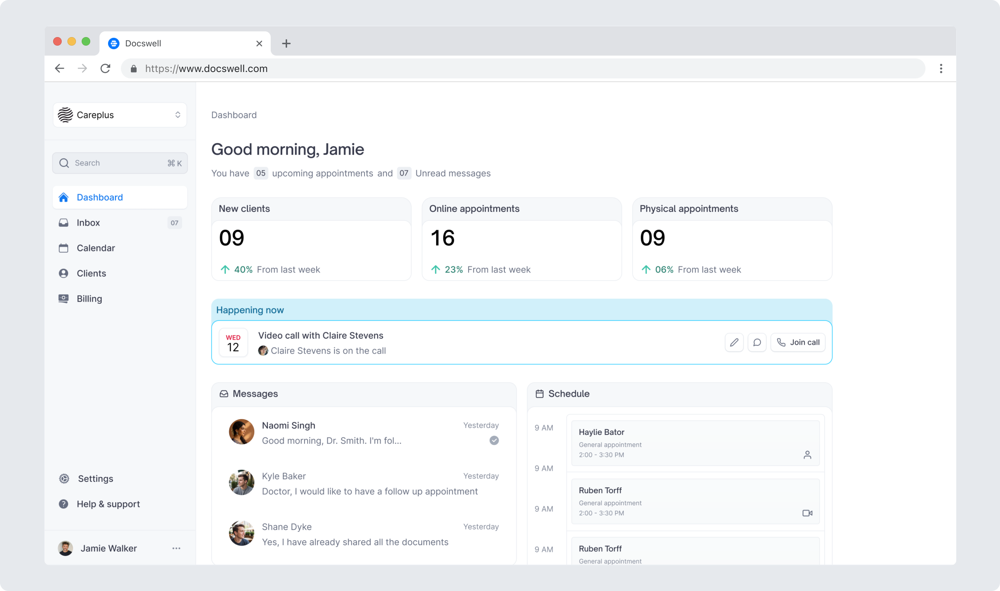
At the time, UK medical practitioners relied on multiple disconnected tools for appointments, records, and communication, creating time-consuming workflows that pulled focus away from patient care.
When I joined, there was already an early MVP, but as the company shifted its focus to therapist-led practices, I redesigned both the practitioner and patient portals to better support new needs and prepare the platform for its first public release.
I was the sole designer on the team and wore multiple hats. I led user research, design system, and end-to-end UI design. I also played a pivotal role in product decisions while collaborating closely with the Founder and COO.
The centralised Inbox helps manage all patient interactions, including assigning patients, messaging, and appointment management. This reduced tool switching, streamlined day-to-day workflows, and enabled faster responses to patients.
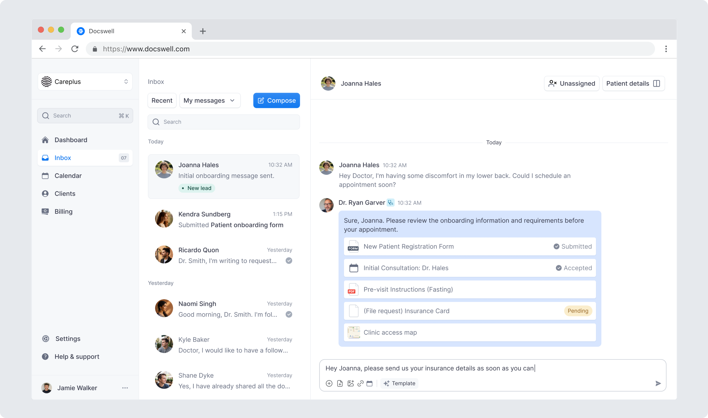
Message templates allow practitioners to quickly send recurring messages with pre-attached documents, forms, and images, reducing repetitive actions and saving time.
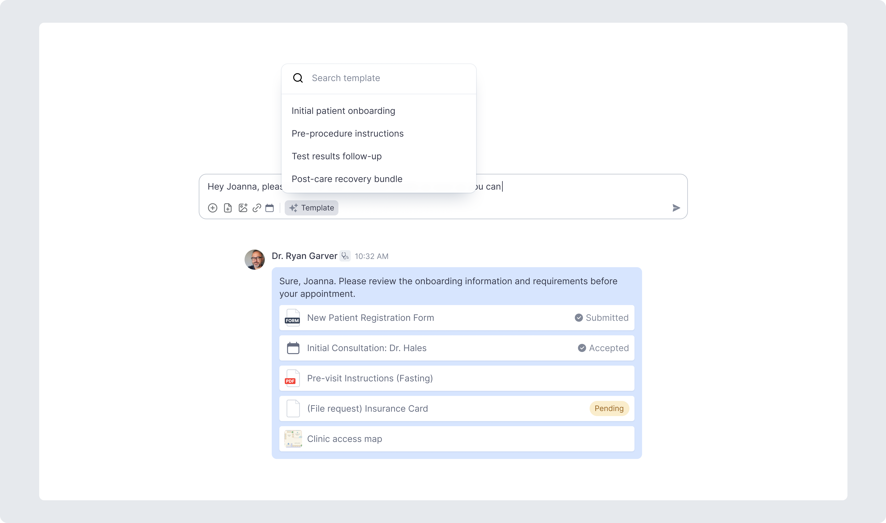
A centralised calendar to manage all appointments and practitioner schedules across the practice.
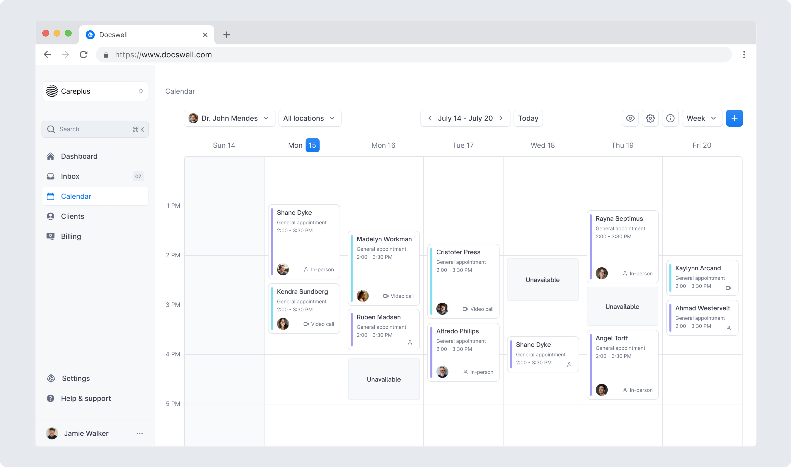
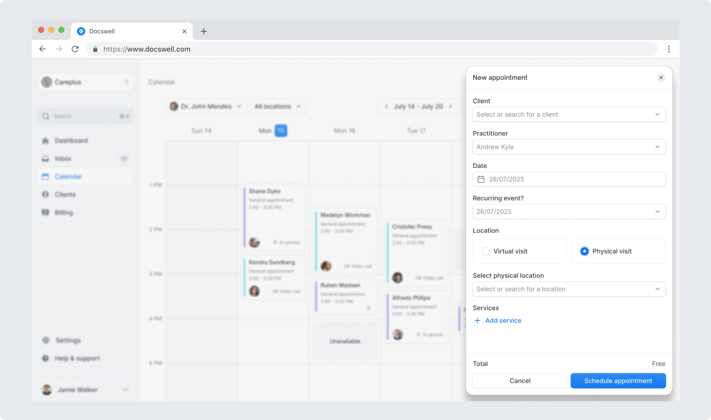
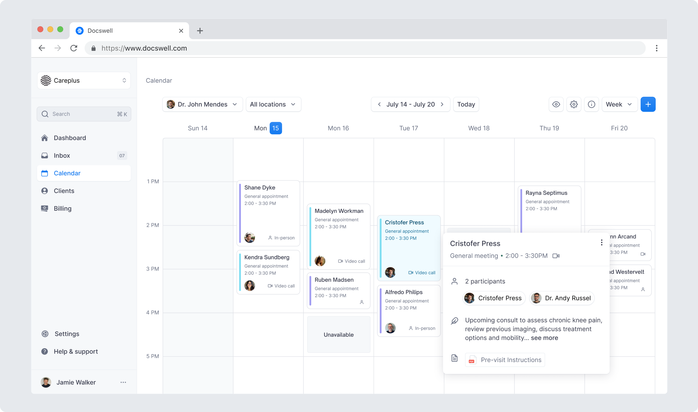
A comprehensive profile section for the patient inludes all details related to them that will help the practitioner in aiding him easily.
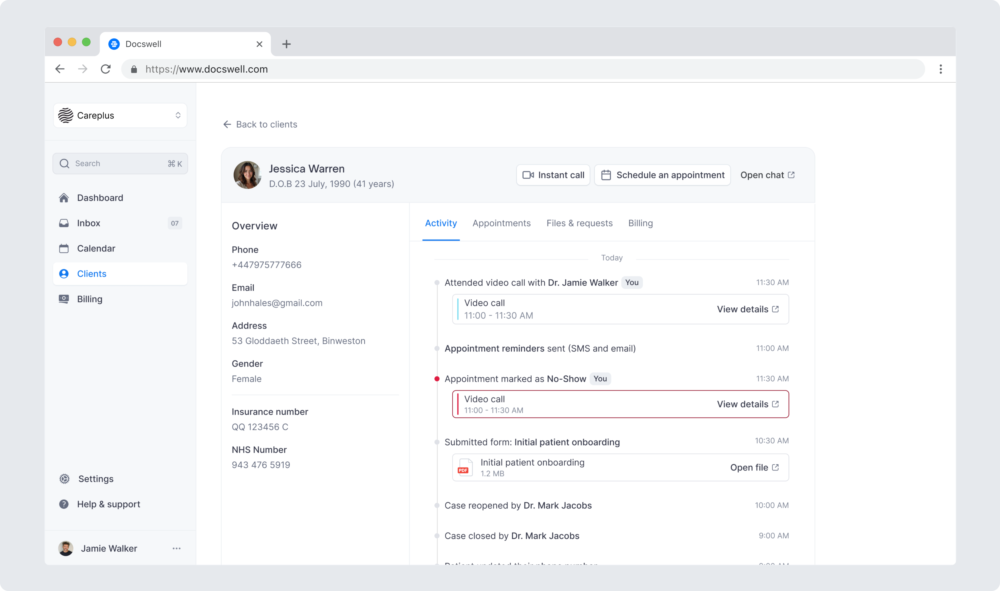
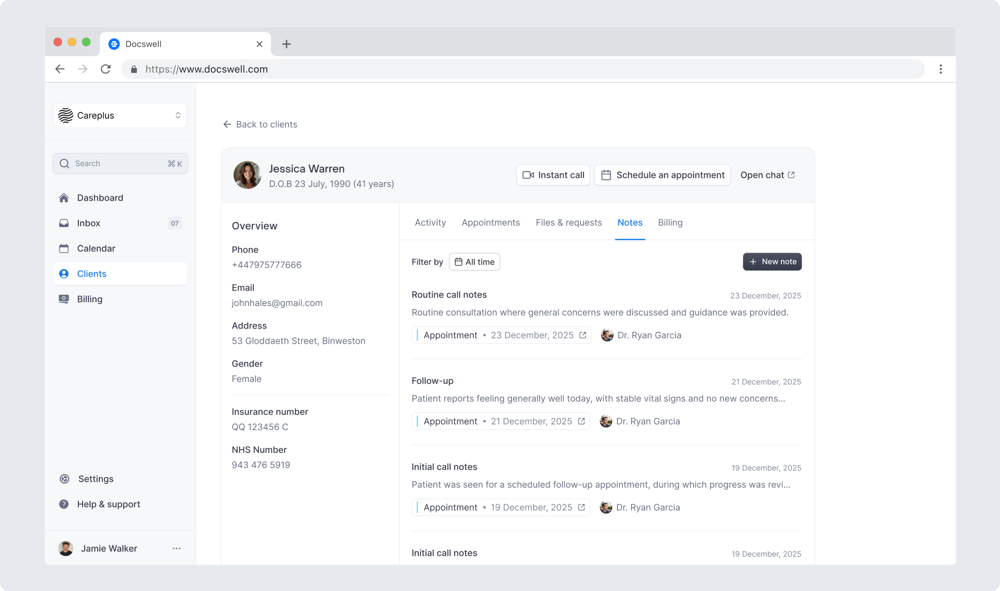
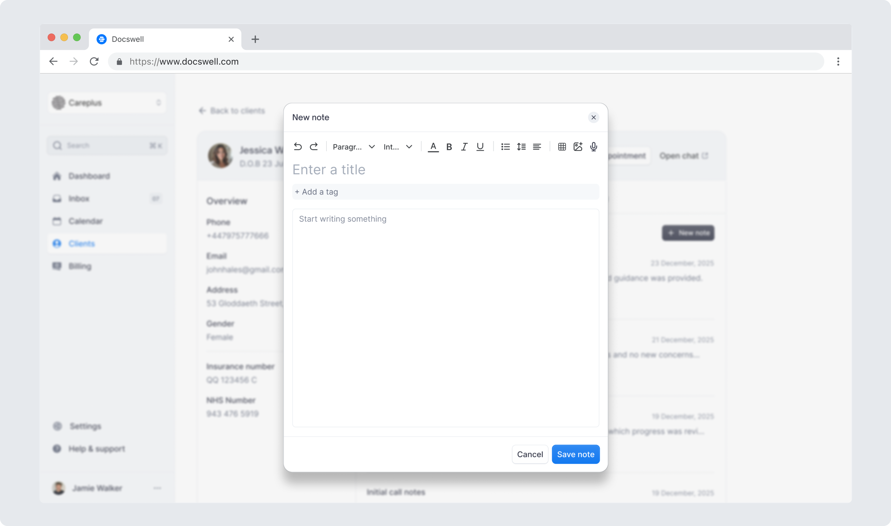
The settings experience was restructured into a clear, well-organised system, making complex practice configuration easier to understand and manage.
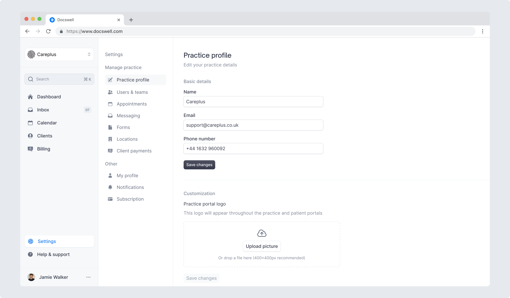